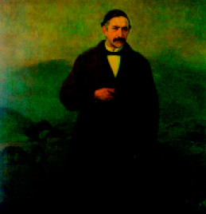

Antonio de Trueba
Dice Fermín Herrán en un discurso pronunciado en la Sociedad El Sitio de Bilbao en 1891 que Antonio de Trueba «es el único escritor vasco de este siglo que ha impuesto su nombre en las páginas de la literatura española». Un año antes, Delmas había afirmado en un artículo que el autor encartado «ha sido el primero y más grande literato que ha producido Vizcaya hasta los presentes tiempos ». Ninguna de las dos afirmaciones resulta exagerada en lo más mínimo dentro de su contexto.
Antonio de Trueba nace en 1819 en Montellano, muy cerca de Galdames, en el hondón de las Encartaciones vizcaínas, un paraje absolutamente idílico que marcará su infancia y su literatura. Trueba es el costumbrista de corazón sencillo y alma generosa. El paisaje, como para el poeta suizo Ramuz, es su auténtica patria. Con quince años abandona se bucólico país y se planta en Madrid para trabajar en la ferretería de unos familiares. Allí comenzará a escribir en los periódicos y allí cosechará sus primeros éxitos como escritor. Los ingredientes de su literatura le allanan el camino. Trueba escribe para todos los públicos unos relatos llenos de buenas intenciones, con unos personajes arquetípicos más cerca de los cuentos de Andersen que de los narradores realistas de su época.
En 1852 publica El libro de los cantares, obra que le dará fama y sobrenombre, pues desde entonces será conocido como «Antón el de los Cantares». Entre 1853 y 1866 da a la imprenta sus Cuentos populares, Cuentos de color de rosa, Cuentos campesinos y Cuentos de vivos y muertos.
En 1862 la Diputación de Vizcaya le ofreció el cargo de archivero del Señorío. Pese a las recomendaciones de Hartzenbush, que pensaba que bandonar Madrid como arruinar su carrera literaria, Trueba aceptó la oferta. El paisaje de la infancia tiraba de él con fuerza. Su obra conoció múltiples reediciones y hasta los diccionarios franceses de literatura le citaban. Su obra influyó en autores como Rosalía de Castro, Ricardo Palma o Pereda. Cuentan que su paisano don Miguel de Unamuno no podía leerle sin derramar alguna lágrima. Trueba murió en el año 1889.